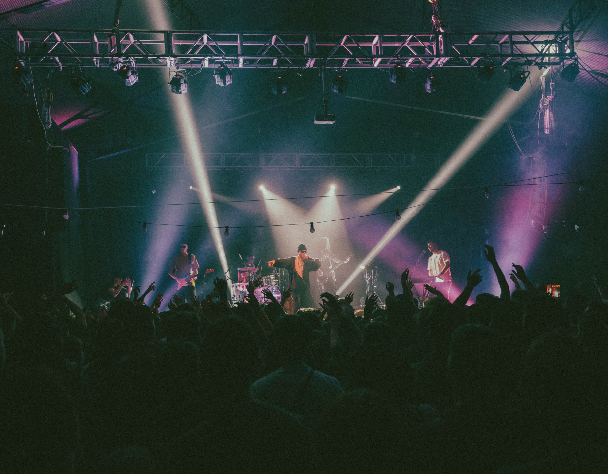
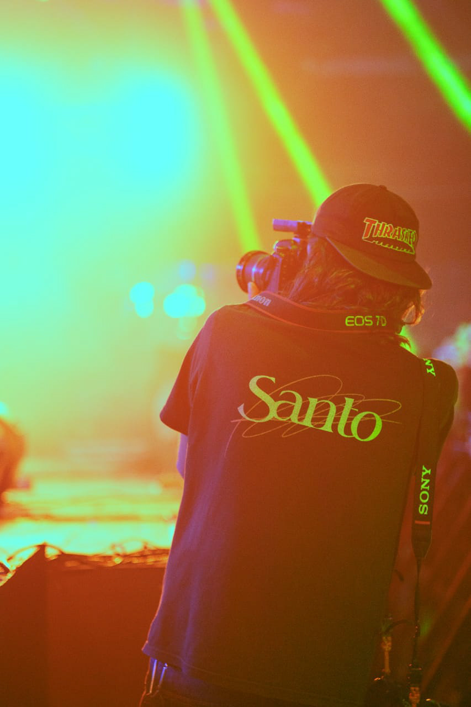

CALIOPE FAMILY ↗
FOTOGRAFÍA EN EXTERIOR DISEÑO DE PIEZAS PARA REDES SOCIALES BACKSTAGE CALIOPE FAMILY X KERCHAK

Me apasiona pensar proyectos de manera integral: desde el diseño hasta la fotografía y el video, buscando que cada pieza dialogue con las demás, creando un universo visual coherente y expresivo.
Con base en Rosario (Argentina), desarrollo producciones audiovisuales, dirección de arte, fotografía editorial, sistemas tipográficos de identidad, publicaciones editoriales y experimentación con obra impresa en risografía. Mi enfoque combina sensibilidad narrativa con solidez técnica en el montaje, la composición y el ritmo visual.
A lo largo de mi trayectoria he colaborado en videoclips, identidades y material gráfico para artistas y bandas (Nasir Catriel, Fasciolo, Gladyson Panther, Kerchak), así como en proyectos integrales para marcas de indumentaria, estudios de arquitectura e instituciones (CMS Arquitectas, Sonder, FAPyD UNR).
Desarrollo audiovisual integral, fotografía de autor y diseño de identidad para personas, bandas y marcas con mirada propia.